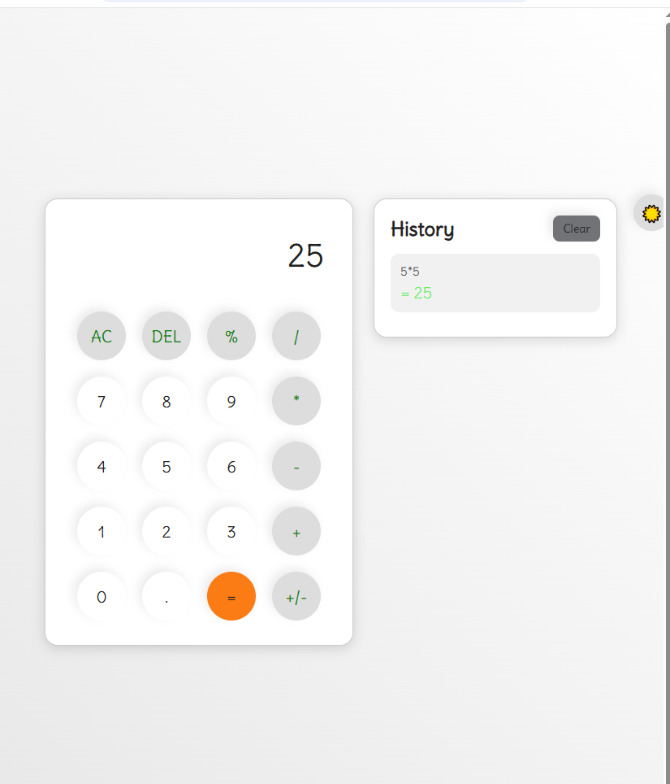

Frontend Development
Creating structured layouts and responsive interfaces for different screen sizes.
HTML5
CSS3
JavaScript
Responsive Design
Frontend Development · AI
Hi, I'm Saba Naz — a BS Data Science student in my 3rd semester, exploring frontend development and AI engineering. I enjoy turning ideas into responsive, useful and visually polished web experiences.
One project at a time.
Curious mind. Continuous growth.
A Little About Me
I'm pursuing a Bachelor's degree in Data Science and currently in my 3rd semester. Alongside my academic journey, I'm strengthening my frontend development fundamentals and exploring the possibilities of AI.
I enjoy creating web interfaces that are responsive, accessible and easy to use. Every project gives me an opportunity to practise my skills, solve problems and learn something new.
My goal is to keep improving as a developer and build meaningful digital experiences through consistent learning and hands-on projects.
Explore my GitHubMy Toolkit
Technologies and concepts I'm practising through coursework and hands-on projects.
Creating structured layouts and responsive interfaces for different screen sizes.
Building clean interfaces with modern CSS layout techniques and reusable styling.
Practising programming fundamentals and managing projects with development tools.
Exploring AI-powered applications, API integration and interactive user experiences.
What I Can Help With
I create beginner-friendly, custom web experiences for personal projects, small businesses and special occasions.
Clean, attractive single-page websites to introduce a product, service, idea or small business.
Personal websites to showcase your introduction, skills, projects and contact links.
Personalised birthday, anniversary and special-moment pages with thoughtful messages and simple animations.
Small interactive features such as quizzes, calculators, theme switches and dynamic UI elements.
Selected Work
Practical projects that reflect my learning, creativity and progress as a developer.

An AI-powered portfolio assistant that helps visitors explore professional skills, projects and experience through a conversational interface with streaming AI responses.

A floral-themed personal web project featuring an elegant visual experience, bouquet inspiration and an interactive Find Your Bloom quiz.

A currency conversion interface built while practising JavaScript, API requests, asynchronous operations and dynamic user interface updates.

A responsive café website featuring clean layouts, welcoming visuals and a user-friendly experience across desktop and mobile screens.

A modern calculator project with interactive calculations, a light and dark theme switch, and calculation history.
Experience
July 2026 — August 2026
FlyRank AI · Internship
Completed an internship involving JavaScript, frontend development exercises and AI-related projects. Gained practical exposure to building user-focused web experiences and exploring AI integration.
Get In Touch
I'm open to learning opportunities, collaborative projects and connecting with people interested in frontend development and AI.